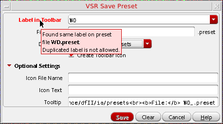
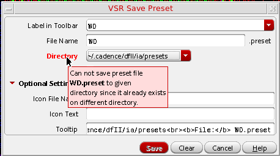
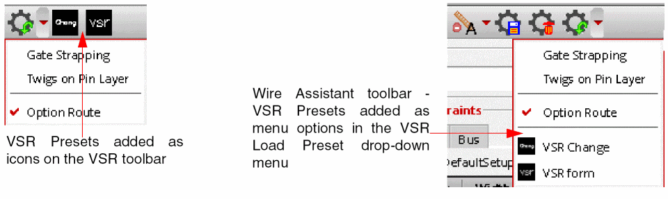
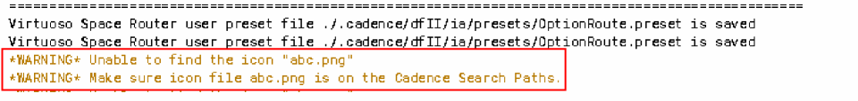
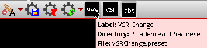
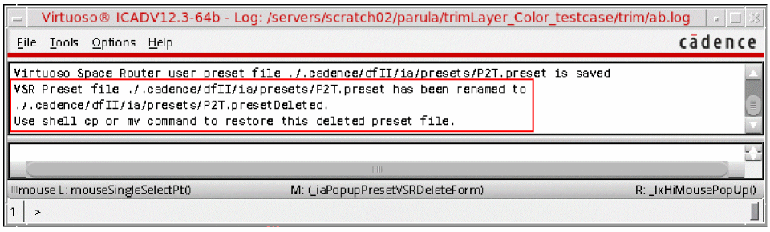
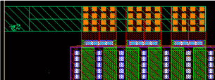
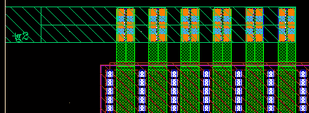

5
Working with VSR Presets
A Virtuoso Space-based Router (VSR) Preset is a set of predefined routing options and user override constraint values, which can be saved to a file. For more information, see Preset File.
This chapter covers the following topics.
- Virtuoso Space-based Router Preset Toolbar
- Saving a Preset File
- Deleting a Preset File
- Loading a Preset File
Virtuoso Space-based Router Preset Toolbar
A Virtuoso Space-based Router (VSR) Preset is a set of predefined routing options and user override constraint values, which can be saved to a file. For more information, see Preset File.
The VSR Preset toolbar lets you save, load, restore, and delete routing-related settings and user override constraint values for all Automatic routing features. Using the VSR Preset toolbar, you can quickly switch between routing options with a single mouse click.
The VSR Preset toolbar is part of the Virtuoso Space-based Router toolbar. To display the toolbar, choose Window – Toolbars – Virtuoso Space-based Router. The figure below shows the various options available on the VSR Preset toolbar.
You can also access the VSR Preset options from the Wire Assistant toolbar, as shown below.
The VSR Preset toolbar consists of four icons.
The state of the VSR Preset icons on the Virtuoso Space-based Router toolbar and Wire Assistant toolbar are synchronized at any given time. Because Wire Assistant does not have enough space to display all the user-defined presets as toolbar icons, the presets are displayed in the VSR Load Preset drop-down menu.
VSR Reset Options
VSR Reset Options lets you reset the override constraints that have been changed in the Net and Pin Escape tabs of the Override Constraints section of the Wire Assistant. It also lets you reset the VSR options that have been changed either in the Wire Assistant or in the Virtuoso Space-based Router Options form. The wire editing options that appear in the Interactive section of the Wire Assistant can also be reset.
Click the arrow next to the VSR Reset Options icon to select one of the three reset modes: Reset Override Constraints And VSR Options, Reset Override Constraints, or Reset VSR Options. By default, the reset mode is Reset Override Constraints And VSR Options.
The icon corresponding to the mode selected last stays displayed on the toolbar. If you want to run a different reset mode, select it from the drop-down list. When you select a reset mode, the icon on the toolbar is automatically updated to reflect the change in mode.
VSR Save Preset
The VSR Save Preset icon lets you save the modified override constraint values and the automatic routing and interactive routing environment variables to a preset file. The VSR Save Preset form is displayed when you click this icon. For more information, see Saving a Preset File and VSR Save Preset Form.
Related Topics
VSR Delete Preset
The VSR Delete Preset icon lets you delete a preset file. The VSR Delete Preset form is displayed when you click this icon. For more information, see Deleting a Preset File and the VSR Delete Preset Form.
Related Topics
VSR Load Preset
The VSR Load Preset icon lets you load a preset. Clicking the icon lets you do the following:
- Refresh the presets found in the preset search paths.
- Reload a previously loaded preset file, if there is one.
You can click the arrow next to the VSR Load Preset icon to load a different preset file from the drop-down menu. For more information, see Loading a Preset File.
Related Topics
Saving a Preset File
Click the VSR Save Preset icon on the VSR Preset toolbar or on the Wire Assistant toolbar. The VSR Save Preset form displays. In this form, you can specify the name and location of the preset file to which you want to save the current override constraint values and the values specified for various automatic routing and interactive routing environment variables.
To save the preset file, do the following:
-
Specify a label for the preset file in the Label in Toolbar field. You will notice that the File Name field is automatically populated with the value that you specify in this field.
If you also select the Create Toolbar Icon check box, an icon is added to the toolbar, labeled with the value that you specified. If you do not select the check box, the label appears as an option name on the VSR Load Preset drop-down menu. This label helps to identify a preset file.
You cannot create a preset that has the label name same as an existing preset file in the same directory path. If the specified existing preset label already exists, the color of the Label in Toolbar field name changes to red and an appropriate tooltip is displayed, as shown in the following figure. Because duplication of the preset label is not allowed, the Save button is also disabled.
 -
Specify the name with which you want to save the preset in the File Name field. You can also retain the value that was automatically added to this field, which is the same as the label that you specified. The preset file is saved with the extension
.preset.
The name of the preset file is automatically generated based on the value specified in the Label in Toolbar field. For example, if you specify the label name asAuto Route, then the filename is automatically updated toAutoRoutein the File Name field.
Similarly, when a preset file is selected from the Label in Toolbar drop-down list, the filename of the preset file is automatically updated in the File Name field. -
Select the location to which you want to save the preset file from the Directory drop-down list. You can select one of the following locations:
-
Current Virtuoso Invoking directory
If the entries are specific to the current layout design, save the preset file to the current directory from where Virtuoso is run. The path from where Virtuoso is run is ./.cadence/dfII/ia/presets. -
$HOME
If the preset entries are applicable to other layout designs as well, save the preset file to the HOME directory. The path for the HOME directory is~/.cadence/dfII/ia/presets. -
$CDS_PROJECT
If the preset entries are general enough and can be shared with others in a design team, save the preset file to the directory to which theCDS_PROJECTshell environment variable points. The directory path is$CDS_PROJECT/dfII/ia/presets.
You cannot save a preset file to the specified directory location if the same preset file already exists on the different directory location. In this case, the color of the Directory field name changes to red and an appropriate tooltip is displayed, as shown in the following figure.
 -
Current Virtuoso Invoking directory
-
Select the Create Toolbar Icon check box to add the preset as an icon on the VSR Preset toolbar. If the Create Toolbar Icon check box is deselected, the preset is added as a menu option in the VSR Load Preset drop-down menu.
In the Wire Assistant toolbar, all presets for which the Create Toolbar Icon check box is selected are automatically placed at the bottom of the VSR Load Preset drop-down menu and the icon for each preset is placed before the menu option. The presets for which the Create Toolbar Icon is deselected are placed in the middle of the drop-down menu, with only the option name.
 - Click Optional Settings. This enables the optional settings that are avialable in the form.
-
Specify the name of the icon file that you want to use for a particular preset in the Icon File Name field. The icon file name should be available in the
<cds-install-dir>/share/cdssetup/icons/24x24directory or in theicons/24x24directory on any Cadence File System hierarchical lookup path as follows../.cadence/icons/24x24
~/.cadence/icons/24x24
It is recommended to place the icon on CDS_PROJECT shell environment variable if it is shared among various users.$CDS_PROJECT/icons/24x24
This option is applicable only if the Create Toolbar Icon check box is selected. If the specified filename is unavailable, a warning message is displayed in CIW, as shown in the following figure.
 -
Specify text in the Icon Text field. The specified text gets displayed on the VSR Preset toolbar icon. The icon created is of
24x24pixels.
If the specified text for the icon is one word, VSR Preset generates an icon with a single line text of maximum five characters. If the specified text has more than one word, the VSR Preset generates an icon with text in two lines. The icon text consists of maximum of five characters in each line.
If the Icon Text field is left blank, VSR Preset automatically uses the value from the Label in Toolbar field. The Icon Text field is ignored if the Create Toolbar Icon check box is deselected or if a valid Icon File Name is specified.
In addition, if an already existing icon text is specified, the Icon Text field is automatically set to empty once the value of either Label in Toolbar or File Name field is changed. The original value of the icon text cannot be restored if the value of the File Name field is changed after the value of the Icon Text field is set to empty. The only way to restore the icon text value is either by changing to the original value in the Label in Toolbar field or by again selecting the preset from the Label in Toolbar combo box. -
Specify the text that you want to appear as a tooltip when the mouse pointer is placed on the preset icon in the Tooltip field. By default, the Tooltip field is prepopulated with three values: Label, Directory, and File names, as shown in the following figure.
You can either delete these values and add your own tooltip or append the tooltip to the existing string.
When the value of Label in Toolbar, File Name, and Directory fields are modified, the tooltip for the preset icon is automatically updated. - Click Save to save the current settings to a preset file for future use.
Deleting a Preset File
To display the VSR Delete Preset form, click the VSR Delete Preset icon on the VSR Preset toolbar or on the Wire Assistant toolbar.
To delete the preset file, do the following:
- Select the preset file that you want to delete from the Preset Label drop-down list. This drop-down lists all preset files that are currently loaded.
-
Click Delete.
When you click Delete, the preset file is really not deleted but is only renamed and saved as<file-name>.presetDeleted. As a result, you can restore and use the file later, if required. A message indicating the same also appears in CIW.
The menu option and toolbar icon corresponding to a deleted preset is removed from the VSR Preset toolbar.
Loading a Preset File
To load a preset file, VSR Preset feature follows the Cadence Search Function Specificiation, except for the @LIBRARY entry in the setup.loc file. This means that you can copy the setup.loc file from ${CDS_INST_DIR}/share/cdssetup to the directory from where Virtuoso is invoked. You can then edit the file and invoke Virtuoso.
The original setup.loc file has the following entries:
.
@LIBRARY look in the design libraries for the file
$CDS_WORKAREA user workarea if defined
$CDS_SEARCHDIR this is set by various tools during tool startup
$HOME
$CDS_PROJECT project storage area, ignored if not defined
$CDS_SITE Site Setup Information. Default is $CDS_INST_DIR/share/local
$(compute:THIS_TOOL_INST_ROOT)/share Cadence Default Setup Information
You can change the entries in the setup.loc file as follows:
.
@LIBRARY
$CDS_WORKAREA
$CDS_SEARCHDIR
$HOME
$TSMC Add as a user defined search directory
$CDS_PROJECT
$CDS_SITE
$(compute:THIS_TOOL_INST_ROOT)/share
For every entry, except for $(compute:THIS_TOOL_INST_ROOT)/share) in the user's customized setup.loc file, the preset reads and writes the file to its .cadence/dfII/ia/presets directory. For example, $CDS_SITE shell environment points to ./myCDS, then the preset reads and writes the preset files from ./myCDS/.cadence/dfII/ia/presets.
The VSR Preset feature then searches and loads the preset file in the following order.
./.cadence/dfII/ia/presets
$CDS_WORKAREA/.cadence/dfII/ia/presets
$CDS_SEARCHDIR/.cadence/dfII/ia/presets
$HOME/.cadence/dfII/ia/presets
$TSMC/.cadence/dfII/ia/presets
$CDS_PROJECT/.cadence/dfII/ia/presets
$CDS_SITE/.cadence/dfII/ia/presets
where $TSMC is a shell environment variable defined as follows:
setenv TSMC ~/TSMC
This means that if the same preset label is found in .cadence/dfII/ia/presets and <HOME>/.cadence/dfII/ia/presets directories, then the one in the .cadence/dfII/ia/presets directory is used. If the same toolbar label is found in two different files in the same directory, then the file that is read first is used. The VSR Preset feature also issues a warning if the same preset label is found in different directories.
When you click the VSR Load Preset icon, all the preset files found in the preset search paths are loaded and the list of available VSR presets is refreshed in the VSR Load Preset drop-down menu. Also, the last preset file, if any, is reloaded.
The VSR Preset feature has two built-in Pin to Trunk preset files, gatesStrapping.preset and twigOnPinLayer.preset. These preset files are located in <CDS_INSTALL_DIR>/share/cdssetup/dfII/ia/presets directory. The two preset files are available in the VSR Load Preset drop-down menu, as shown in the following figure.
-
Auto Device Routing
Click Auto Device Routing to load the automatic device routing script and enable the Tree Route flow in the Wire Assistant. For more information, see Specifying the Tree Route Options. -
Gate Strapping
Click Gate Strapping to load the gate strapping preset script with theminWidthstrap width and enable the options in the Pin Strapping group box in the Twig subform of the Virtuoso Space-based Router Options form. For more information on the options that you can specify for Pin Strapping, see Specifying Pin Strapping Options.
 -
Twigs on Pin Layer
Click Twigs on Pin Layer to load the twigs on pin layer preset script, which, by default selects the Prefer Pin Layer menu item in the Layer drop-down list of the Gate Twig and Non Gate Twig group box in the Twig subform. The twigs use the same layer as pins. For more information, see Specifying Gate Twig and Non-Gate Twig Options and Specifying Via over Pin Coverage Options.

The presets are alphabetically placed on the VSR Load Preset drop-down menu. After a preset file is loaded, it automatically becomes the active preset. The active preset is indicated by a tick mark ( ) beside the preset label in the drop-down menu or by a slight depression of the icon, as shown in the following figure.
Alternatively, when you place mouse pointer on the VSR Load Preset icon, the tooltip lists the currently active preset, as shown in the following figure.
The active preset can become out of sync when you change any override constraint value or reset any environment variable in the Wire Assistant, Virtuoso Space-based Router Options form, or Via Configuration form. When the preset is out of sync, an exclamation mark (!) appears on the VSR Load Preset icon and the tooltip displayed on the icon is updated to indicate the Out-of-Sync state, as shown in the following figure.
Once the preset is out of sync, you cannot synchronize the preset by changing the override constraint or environment variable back to its original value. The only way to synchronize the preset is by reloading the preset file.
If the preset file has at least one override constraint value, then VSR Load Preset automatically clears all caches before processing the preset entries. This is required so that the override constraint values can be restored to a state that is just the same as when the preset is saved. However, if the preset file does not have any override constraint value, caches are not cleared. This ensures that the VSR Load Preset feature does not disturb the specified override constraint values after the preset is loaded. You can force VSR Load Preset to clear all caches by adding the following entry in the preset file:
clearCst nil nil nil
Execution Mode of Preset File
Because the preset is an ASCII file, you can edit the content of the preset file using any text editor. While editing a preset file, errors might get introduced. Therefore, before processing a preset file, the VSR Load Preset feature lets you check the syntax, value, and context of the entries. If the entries have errors, depending upon the execution mode, the VSR Load Preset behaves differently.
-
Setting mode
Skips any preset entry that has an error and processes and loads all the entries that are error free. -
Checking mode
Processes the entries only if all the entries in the preset file are error free. If even one entry has an error, none of the entries are processed, even if all other entries are error free. Therefore, this mode is used to check the correctness of the preset file after the preset file is modified. This is the default mode.
In both execution modes, the VSR Preset Load Errors dialog box is displayed to inform you about the errors that have been found. The errors are displayed along with the line number to indicate where the error has occurred. The following figure shows a preset file that has six errors. It also displays an error free entry at the end.
If the mode is setting, the last error free entry is processed, as shown in the following figure.
However, if the mode is checking, no entry is processed even though the last entry is error free. This can be seen from the output messages displayed in CIW.
Environment Variable:
Errors in Preset File Entries
The four kinds of errors that can exist in preset entries are given in the table below.
Return to top